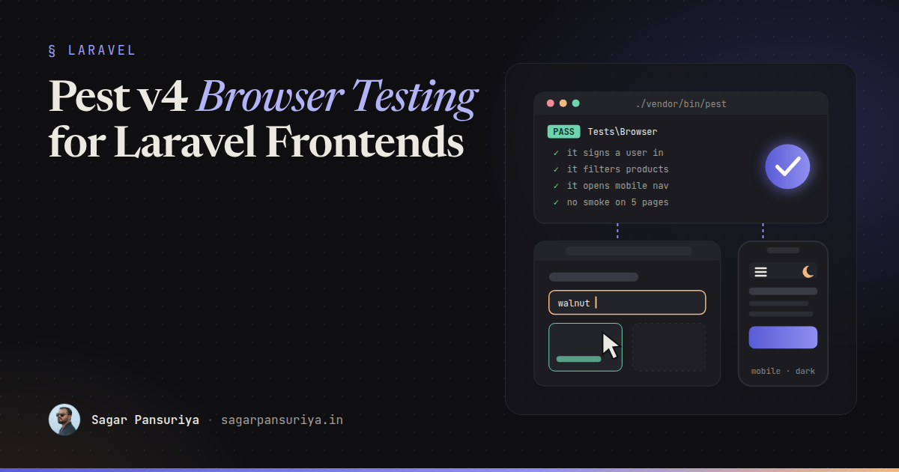
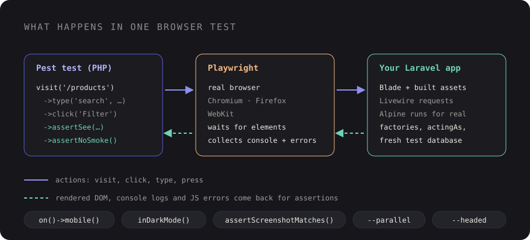

Pest v4 Browser Testing: Real Browser Tests for Your Laravel Frontend


You've probably shipped this bug. Every feature test is green, the controller returns 200, the Blade view contains the right text. Then someone opens the page and the dropdown doesn't open, because an Alpine component throws on load and takes the rest of the page's JavaScript with it. Your HTTP tests never ran a line of JavaScript, so they had no way of knowing.
For years, the answer in Laravel was Dusk, or a separate Playwright or Cypress suite in JavaScript. Both work, but they live apart from the rest of your tests. Pest v4 changes that with first-party browser testing: real browser tests, powered by Playwright, written in the same Pest syntax as your unit and feature tests.
This post walks through setting it up, the handful of methods you'll use constantly, testing Livewire and Alpine behaviour, smoke testing every page in one line, device and dark mode emulation, screenshots, and running it in CI.
Installing the browser plugin
Browser testing ships as a Pest plugin, and it uses Playwright under the hood, so you install both the PHP package and the Playwright browsers:
composer require pestphp/pest-plugin-browser --dev
npm install playwright@latest
npx playwright installThat's it for setup. Browser tests are ordinary Pest tests, so the usual place is a
tests/Browser directory, configured in tests/Pest.php like your
feature tests, so they get the Laravel test case and a fresh database:
// tests/Pest.php
pest()->extend(Tests\TestCase::class)
->use(Illuminate\Foundation\Testing\RefreshDatabase::class)
->in('Feature', 'Browser');One thing to remember: the browser loads your real frontend assets. Run
npm run build (or have the Vite dev server running) before the suite, or
you'll be testing a page with no CSS or JavaScript.
Your first browser test
Everything starts with visit(), which opens a URL in the browser and returns a
page you can interact with and assert against:
// tests/Browser/HomePageTest.php
it('shows the home page', function () {
$page = visit('/');
$page->assertSee('Build faster with Laravel')
->assertNoJavascriptErrors();
});Because it's a normal Pest test, factories, actingAs() and fakes all work.
A login flow reads almost like a user story:
it('lets a user sign in', function () {
$user = User::factory()->create(['email' => 'sagar@example.com']);
visit('/login')
->type('email', 'sagar@example.com')
->type('password', 'password')
->press('Log in')
->assertPathIs('/dashboard')
->assertSee('Welcome back');
});The core vocabulary is small, and you'll use these for most tests:
| Method | What it does |
|---|---|
visit($url) | Open a page (or several, with an array) |
click($text) | Click a link, button or element |
type($field, $value) | Type into an input, by name or selector |
press($button) | Press a button by its text |
assertSee($text) | Text is on the page |
assertPathIs($path) | The browser ended up on this path |
assertNoJavascriptErrors() | No uncaught JS errors on the page |
assertNoSmoke() | No JS errors and no console logs |
Pest's documentation at pestphp.com/docs/browser-testing lists the full set of interactions and assertions. Start with these and reach for the rest when you need them.

Testing Livewire interactions
Livewire already has excellent component tests with Livewire::test(). They're
fast and you should keep writing them. What they can't tell you is whether the wiring in the
browser works: that wire:model is on the right input, that the request
actually fires, and that the DOM updates. A browser test covers exactly that gap.
it('filters products as you type', function () {
Product::factory()->create(['name' => 'Walnut Desk']);
Product::factory()->create(['name' => 'Oak Chair']);
visit('/products')
->assertSee('Walnut Desk')
->assertSee('Oak Chair')
->type('search', 'walnut')
->assertSee('Walnut Desk')
->assertSee('1 result')
->assertNoJavascriptErrors();
});Playwright waits for elements to be ready before it interacts with them, which removes most
of the sleep() calls old browser suites were full of. If a debounced
wire:model.live ever makes a test flaky, assert on text that only appears after
the update (like the result count above) rather than on something that was already there.
Testing Alpine behaviour
Alpine components are pure client-side state, so feature tests can't touch them at all. In a browser test they're just UI:
it('opens the account menu', function () {
$this->actingAs(User::factory()->create());
visit('/dashboard')
->click('Account')
->assertSee('Profile settings')
->click('Profile settings')
->assertPathIs('/settings/profile');
});The most valuable line in most Alpine tests is assertNoJavascriptErrors(). A
typo in an x-data expression or a missing Alpine.data()
registration throws in the console, and this assertion turns that into a failing test.
Smoke testing every page in one test
This is my favourite feature. Pass an array of URLs to visit() and assert that
none of them have JavaScript errors or console logs:
it('has no smoke on public pages', function () {
$pages = visit([
'/',
'/about',
'/pricing',
'/blog',
'/contact',
]);
$pages->assertNoSmoke();
});If you only write one browser test, write this one. It catches a broken Vite build, a
third-party script throwing on a page nobody checked, and the stray
console.log someone left in. You can generate the list from your routes or
sitemap, but a hand-picked list of your most important templates is a great start.
If you want to separate the two concerns, assertNoJavascriptErrors() and
assertNoConsoleLogs() also work on their own.
Devices and dark mode
Responsive bugs are the classic frontend regression: the navigation works on desktop, but the mobile menu button is hidden behind a banner. Pest can emulate a mobile viewport and a dark colour scheme per test:
it('opens the mobile navigation', function () {
visit('/')
->on()->mobile()
->click('Menu')
->assertSee('Pricing')
->assertNoJavascriptErrors();
});
it('renders the pricing page in dark mode', function () {
visit('/pricing')
->inDarkMode()
->assertSee('Pricing')
->assertNoJavascriptErrors();
});Dark mode emulation sets the browser's prefers-color-scheme, so it exercises
Tailwind's default dark: variant. If your site toggles dark mode with a class
instead, click your toggle in the test.
Screenshots and visual regression
Text assertions can't tell you that a card's padding collapsed or a button turned white on white. For key pages, Pest can compare a screenshot against a stored baseline:
it('matches the pricing page baseline', function () {
visit('/pricing')->assertScreenshotMatches();
});The first run saves the baseline, and later runs fail if the page changes. A few things make this workable in practice:
- Keep it to a handful of stable, high-value pages. Visual tests on every page become noise quickly.
- Freeze dynamic content with factories and fixed data. Dates, random avatars and rotating testimonials cause false failures.
- Generate baselines in the same environment that runs CI, because fonts and rendering differ between operating systems.
For debugging, screenshot() saves an image of the current state, and running
Pest with --headed opens a visible browser so you can watch the test run.
Running browser tests in CI
In CI you need PHP, Node, the Playwright browsers, and built assets. A GitHub Actions job looks something like this:
# .github/workflows/tests.yml
jobs:
browser:
runs-on: ubuntu-latest
steps:
- uses: actions/checkout@v4
- uses: shivammathur/setup-php@v2
with:
php-version: '8.3'
- uses: actions/setup-node@v4
with:
node-version: '22'
- run: composer install --no-interaction --prefer-dist
- run: npm ci
- run: npx playwright install --with-deps
- run: npm run build
- run: cp .env.example .env && php artisan key:generate
- run: ./vendor/bin/pest --parallelThe --with-deps flag installs the system libraries the browsers need on a fresh
Linux runner. Browser tests are slower than feature tests, so --parallel helps,
and many teams run the browser suite as a separate job so a quick feature-test failure
reports first.
What to test in the browser (and what not to)
Browser tests are slower and a bit more brittle than feature tests, so be deliberate:
- Do: a smoke test across key pages, critical user journeys (sign up, checkout, main form), JavaScript-driven UI (Alpine, Livewire wiring), and mobile navigation.
- Don't: validation rules, authorisation logic, or every edge case of a calculation. Feature and Livewire component tests do that faster.
A checklist to start with
- Install
pestphp/pest-plugin-browserand the Playwright browsers. - Add a
tests/Browserdirectory totests/Pest.php. - Write one
assertNoSmoke()test covering your main templates. - Add browser tests for your two or three most important user journeys.
- Cover the mobile navigation with
on()->mobile(). - Add screenshot baselines for a few stable, high-value pages.
- Build assets and install browsers in CI, and run with
--parallel.
The dropdown bug from the start of this post would have failed that very first smoke test. That's the real value here: not a huge new test suite, but a few browser tests that catch the bugs your HTTP tests were never able to see.
Discussion